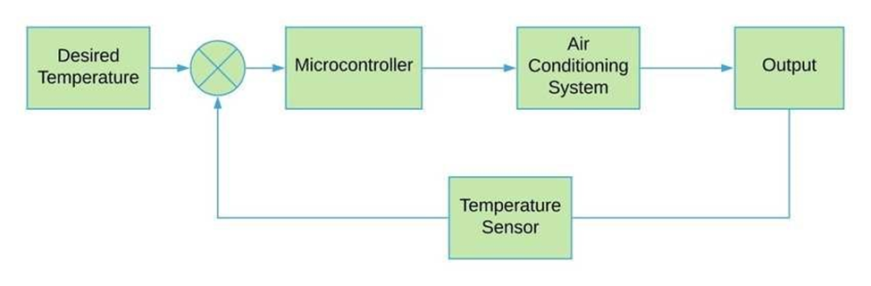

I have implemented an RTOS to read temperature and to control the speed of fan. In this case I have used a dc motor to emmulate a cooling fan. This is meant to serve as a demonstration of Cooling Fan Systems, which regulate the flow and temperature of air being pumped into the room to regulate room temperature. The temperature of the room is also displayed on the LCD in fixed point format.
A typical air condioning system is composed of several tasks that need to be executed concurrently for smooth operation. There needs to be a way of accurately estimate the temperature of the room, a system to accurately control the speed of the motor and a user-interface for specifying the desired room temperature. A simplified block diagram of such a system is shown below.

Operation:
The user sets the desired temperature. The microcontroller compares this temperature with the current temperature of the room, which is provided by the temperature sensor. Based on the comparison, the microcontroller signals the air conditioning system to regulate the flow-rate and the temperature of air flowing through it into the room. By applying an RTOS to an air-conditioning system, we can schedule the various tasks to run in a desired order of priority. For e.g. the highest priority could be given to the task that monitors the room temperature. Further, the system can be augmented with additional sensors, such as humidity sensors, to monitor the moisture content in the room. The system can be made highly responsive by making the timeeslice smaller, while making critical tasks atomic so that they always complete.
Procedure First, I identified the various tasks of my system. They are summarized as follows:
Motor control:
This task applies a specific rpm to the motor. The set rpm value is converted into a corresponding PWM value, which is then loaded into the appropriate register. This PWM value gives input to the on-board motor driver (H-bridge TB6612FNG). The motor driver is capable of driving two low voltage motors, or one stepper motor. Since I did not have any tasks that needed position control, I opted to use a simple low voltage motor.
LCD display:
This task displays the temperature being read by the temperature sensor. The LCD is used in Synchronous Serial Interface (SSI) mode. I used a combination of functions that display strings and decimal numbers in fixed point format to display letters and temperature value.
Temperature monitoring:
The Edubase V2 board has a commercial temperature sensor on-board (LM45), connected to PE5 (AIN8 in the fig. below) of the ADC port. The LM45 has an operating range of -20degC to 100degC, and is accurate within 2oC, so it is perfectly suited for our task of monitoring room temperature. The temperature sensor outputs a voltage proportional to the temperature in degree Celsius. This is an analog voltage that is converted to a digital value by the ADC connected to port E. This voltage value is then converted into a temperature value by multiplying it with a constant.
As demonstrated in the video, the project successfully controls the speed of the motor based on the temperature read (> 27deg C) by the temperature sensor. Further, by reducing the cycle time of each task and reducing the time-slice to a suitably small value, I also improved the responsiveness of the system.